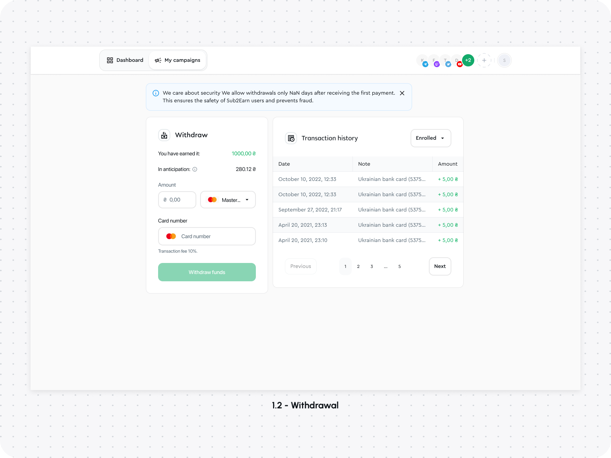
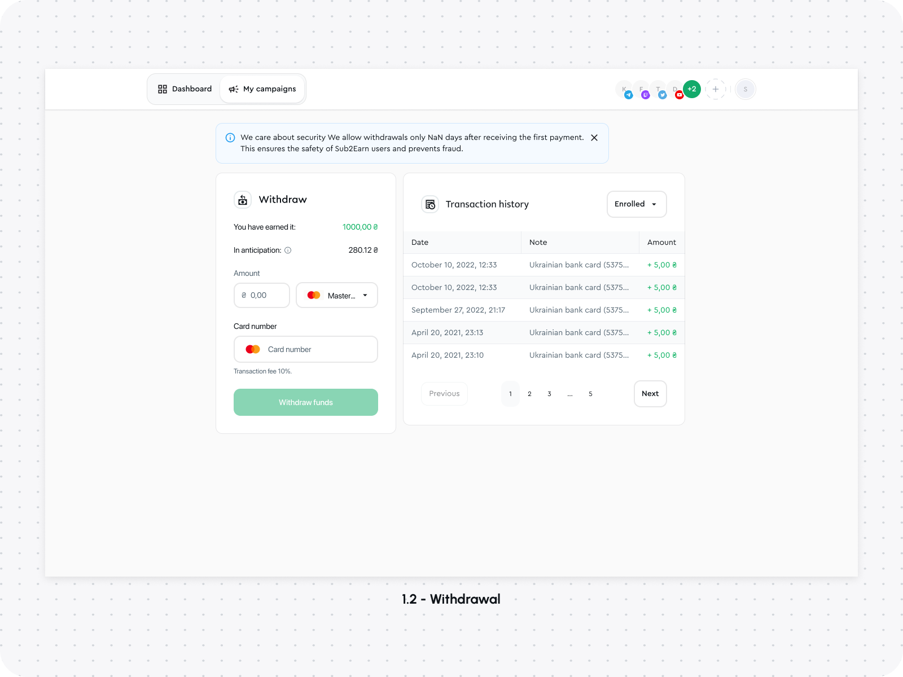

About Sub&Earn
Sub2Earn is a platform designed to provide a financial incentive for subscribing to social media accounts. It caters to both influencers and subscribers, creating a win-win situation where influencers can attract new followers while subscribers earn money by subscribing to accounts.
Task
The primary task of Sub2Earn is to facilitate the monetization of social media accounts and the attraction of new audiences. Influencers can easily create campaigns, set rewards for new subscribers, and view campaign statistics. Subscribers can participate in campaigns and withdraw their earnings to their bank accounts.
Problem
The core issue Sub2Earn addresses is the lack of motivation for people to subscribe to new social media accounts. It also tackles the challenge of enabling account monetization and audience attraction for account owners.
Decision
To resolve these issues, Sub2Earn allows influencers to create campaigns with specified rewards for new subscribers. For example, an influencer can set a $1 reward for subscribing to their campaign, aimed at attracting 1,000 new followers. Each subscriber is rewarded $1 for each campaign, resulting in a total reward of $1,000 for each subscriber.
Onboarding


Dashboard


Campaigns


Other screens
 

Conclusion
Sub2Earn offers a straightforward and user-friendly interface, ensuring user data safety and privacy. Regularly conducted campaigns motivate users to participate, and the platform allows both those who want to earn money by subscribing to social media accounts and influencers looking to monetize their accounts and attract new audiences to benefit from the platform.